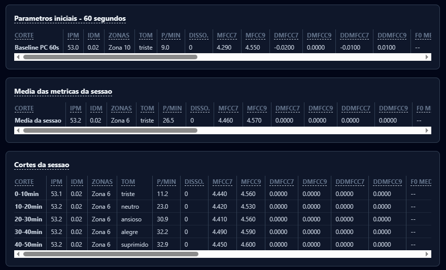

FROID Technology
FROID Psique / Technology
The value of a record begins with its origin. FROID separates vocal characteristics, facial estimates and clinical interpretation so that one layer is not mistaken for another.
The first 60 seconds of calibration establish the vocal reference. The distribution of energy across 12 bands is tracked relative to the session; characteristics such as F0, MFCC and ZCR are part of the available acoustic reading.
Compare it with a ruler: it lets you track variations, but on its own it gives no clinical meaning to what changed. A frequency band does not correspond to a validated emotion.
In the current composition, the IPM organizes the magnitude of acoustic deviations from the reference. The IDM preserves the average direction of those deviations, distinguishing increases and reductions in energy.
The names of the indices are kept in the product, but their current composition is vocal. Facial interpretation is presented separately: it does not trigger marks on the bands, does not multiply deviations and does not prove a conflict between face and speech.
Understand how calculation and clinical validation are distinguished.
The browser extracts numerical coefficients from the patient's authorized video. A single engine on the server produces estimates of Action Units and interprets combinations, preserving laterality and ambiguities.
The contract keeps 16 fields. Fifteen have approximate mappings, dependent on the coefficients received. AU23 remains unmeasured. AU17 uses mouthShrugLower as a proxy; AU23 is not derived from lip roll. AU25 and AU27 are not instrumented. Raw coefficients and legacy estimates are preserved without turning absence into a fictitious value.
These estimates are not equivalent to certified FACS coding. The combinations are organized into seven families of compatible patterns.
Preserving ambiguity avoids choosing a family merely by the order of the rules. Requiring repetition may let very brief expressions slip through; this is not a certification of microexpression detection.
Facial extraction in the browser, interpretation on the server and vocal processing on dedicated infrastructure make up the architecture defined for this version. The video call transmission and the facial analysis flow are distinct paths.
